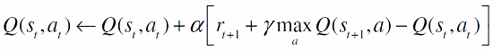

-

Tour
-

Paper
Tour
Paper

| # | Política | Parámetros | Acciones |
|---|---|---|---|
| {{$index + 1}} | {{estrategia.nombre}} | {{estrategia.epsilon? estrategia.epsilon : estrategia.tau}} |

|
| {{grafico.estrategiasAComparar.length + 1}} |
ε:
τ:
No Disp.
|
¿Está seguro de que desea resetear el estado actual?

|
Recompensa total obtenida: {{ultimaPartida.recompensaTotal?ultimaPartida.recompensaTotal:'Aún no se ha calculado'}}.
Estados por los que pasó:
Aún no se ha corrido la simulación.
Para generar el gráfico de comparación de estrategias de selección de acción durante el entrenamiento, debe primero establecer cual es la política óptima. Para ello, primero se entrena exhaustivamente al agente. En nuestras pruebas, la matriz Q suele estabilizarse luego de aproximadamente 5000 iteraciones en los mapas más grandes.
Como ya ha entrenado al agente, puede hacer click en el botón azúl "Q es óptimo", o en el botón "Asumir Q optimo" de esta ventana para asumir el Conocimiento actual como óptimo.
Los tiempos de cada algoritmo en aproximar la política óptima fueron:
Q-learning es una técnica de aprendizaje por refuerzo utilizada para encontrar o aproximar una política de selección de acción óptima para un proceso de decisión de Markov.
La actualización del Q asociado al par (estado, acción) se consigue mediante la fórmula:
El factor de descuento gamma, cuyo valor actual es: {{entrenamiento.qlearning.gamma}} varía entre 0 y 1. Su función es la de regular el valor que tienen las recompensas futuras para el agente por sobre las inmediatas.
El grupo está compuesto por: